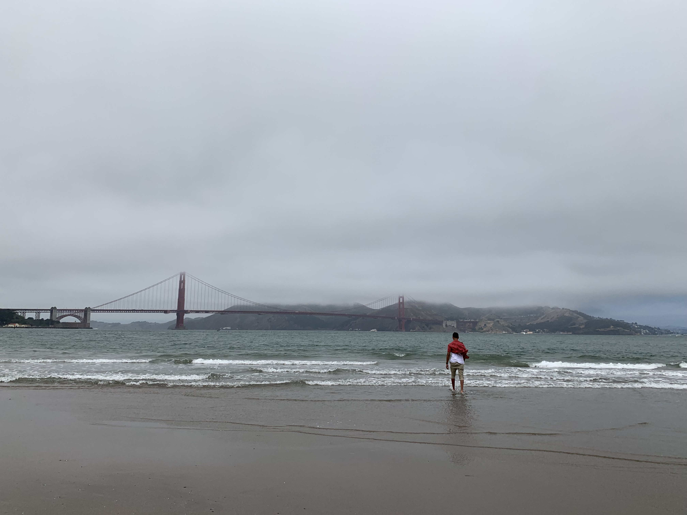
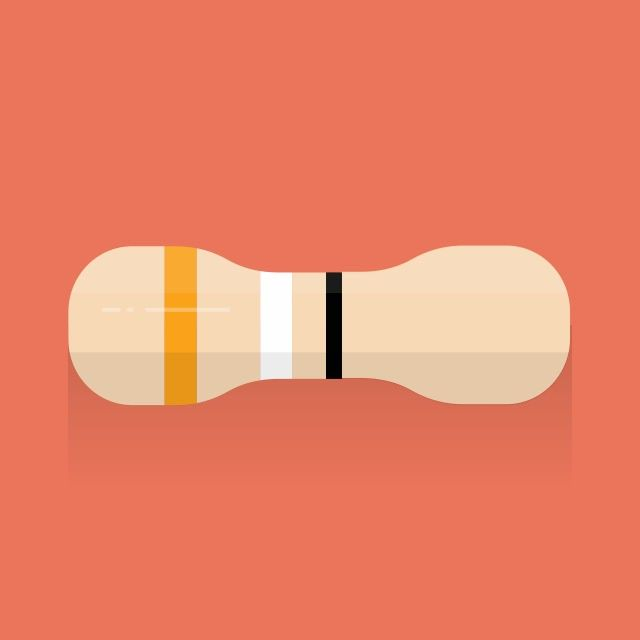

About me
A student at the University of Guelph for Honours Computer Science, I am
passionate about what I do. A theme reflected in my projects, I am enthralled
by learning more about computers as I solve day to day problems by automating them.

Sudoku Solver
by Brute Force
This program uses backtracking methods to solve a sudoku puzzle. I hope to create future iterations with more efficient algorithms, and one day even incorporate machine learning.
Image to Sound Conversion
Algorithm
A passion project, I've created an algorithm to convert pictures into sounds using a 1 to 1 scale. I hope that one day I can release this as an aid to the visually impaired to provide another alternative for them to interpret the world.
Snake Game AI
and Game Rendering

My first introduction to strong neural network design, this project is a personal favourite as it allowed me to learn and experience a variety of new concepts about programming.
Decimal To Binary:
Dynamic Programming

One of the first programs I made during my spare time. This program exercizes dynamic programming through the use of memoization to reduce runtime over iterations of use.